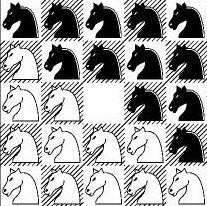
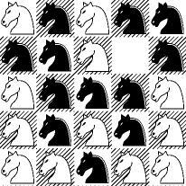

Problem D
Input: standard input
Output: standard output
Time Limit: 10 seconds
There are black and white knights
on a 5 by 5 chessboard. There are twelve of each color, and there is one square
that is empty. At any time, a knight can move into an empty square as long as
it moves like a knight in normal chess (what else did you expect?).
Given an initial position of the board, the question is: what is the minimum number of moves in which we can reach the final position which is:

Input
First line of the input file contains an integer N (N<14) that indicates how many sets of inputs are there. The description of each set is given below:
Each set consists of five lines; each line represents one row of a chessboard. The positions occupied by white knights are marked by 0 and the positions occupied by black knights are marked by 1. The space corresponds to the empty square on board.
There is no blank line between the two sets of input.
The first set of the sample input below corresponds to this configuration:

Output
For each set your task is to find the minimum number of moves leading from the starting input configuration to the final one. If that number is bigger than 10, then output one line stating
Unsolvable in less than 11 move(s).
otherwise output one line
stating
Solvable
in n
move(s).
where n <= 10.
The output for each set is produced in a single line as shown in the sample output.
201011110 10111001010001001011001 11101110100100000
Unsolvable in less than 11 move(s).Solvable in 7 move(s).
(Problem
Setter: Piotr Rudnicki, University of Alberta,
“A
man is as great as his dreams.”